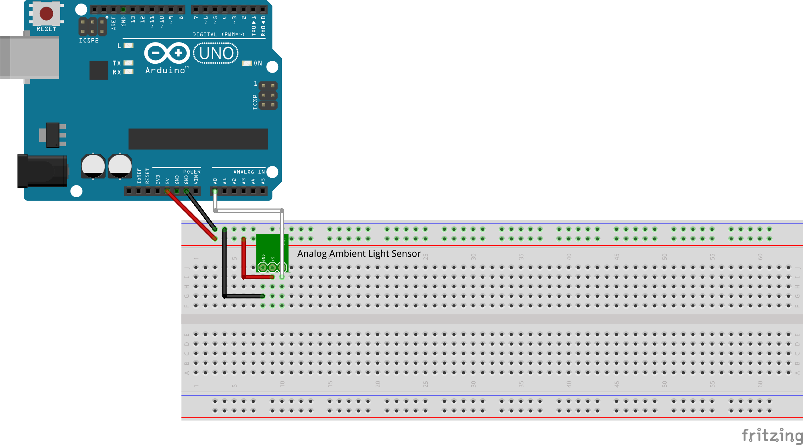
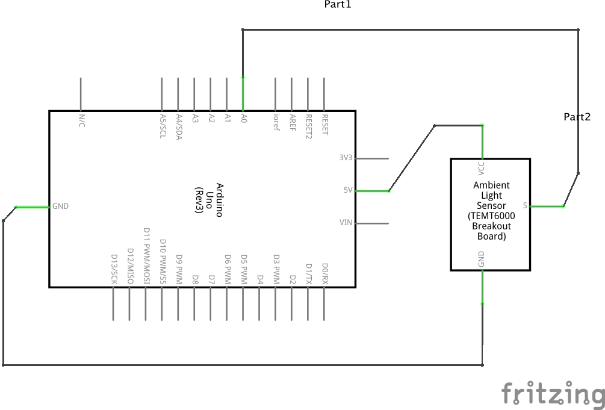
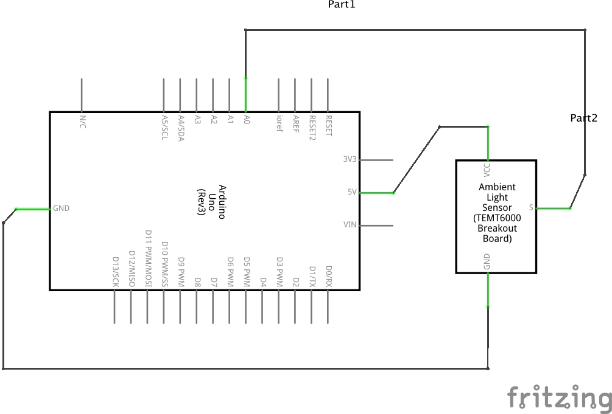

Objective: measure an physical property as a number.
The world is an analog place; physical phenomena have continuity and exist over time. To represent a physical property computationally, the physical process information must be transduced into electrical form and then converted from an analog voltage into a digital number by an analog-to-digital converter, or ADC.
This is a wide and deep topic ranging from signal and information theory to robotics and epistemology, and the entire semester will just begin to explore this idea. But to start, this exercise will represent a single light level as a stream of integers.
The Arduino analog inputs are converted at 10 bits of precision, that is, voltages between 0 and 5V are measured as integer numbers between 0 and 1023, with a nominal resolution of about 4.9 mV per step. However, analog noise in the conversion also limits the precision, so the minimum detectable signal change may be somewhat larger.
The frequency resolution is determined by the sampling rate and the Nyquist-Shannon sampling theorem, which states that a periodic sampling rate must be at least twice as fast as the highest frequency in the input. The Arduino ADC converter runs at a maximum of about 10 kHz, so in principle it can measure signals which vary at up to a 5 kHz rate.
 
